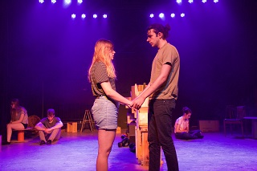
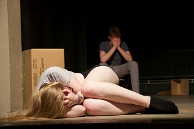

Liberosis: n. the desire to care less about things — to loosen your grip on your life, to stop glancing behind you every few steps, afraid that someone will snatch it from you before you reach the end zone
Iemand uit de vriendengroep is plots verdwenen. Hoe reageer je dan? Geef je de anderen de schuld? Langzaam maar zeker ontstaat er een muur die de groep verdeelt. Is de vriendschap sterker dan de muur? 5 jongeren vinden zichzelf in de zoektocht naar hun vriendin.


Met: Silke Soille, Vincent Hofmans, Luna Stringer, Simme Verschoren en Lotte Vanaeken.
Partners: MijnLeuven, Brasserie 't Goe Gedacht, Episphere (Jazz), Aspergeveldproductions (audiovisuele en grafische communicatie), Voetenwerk (huidzorg en relaxatie), Pierenshof (feestzalen verhuur), X-pair (communication